Истории тех, кто решился
Предприниматели и эксперты рассказывают своими словами: с чего начинали, что делали и что изменилось.

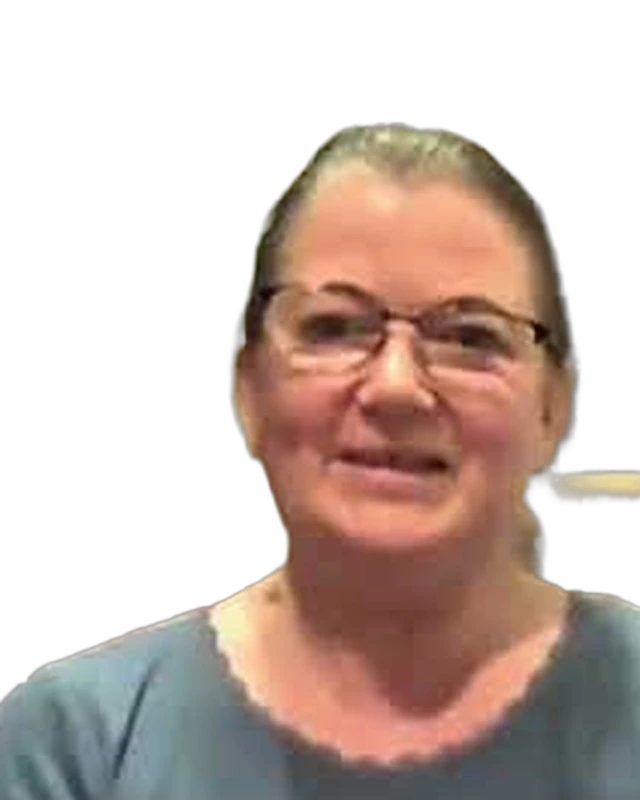
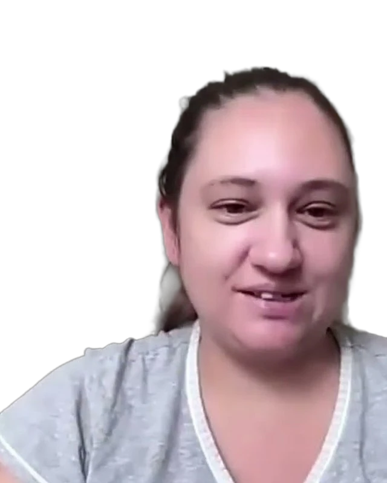
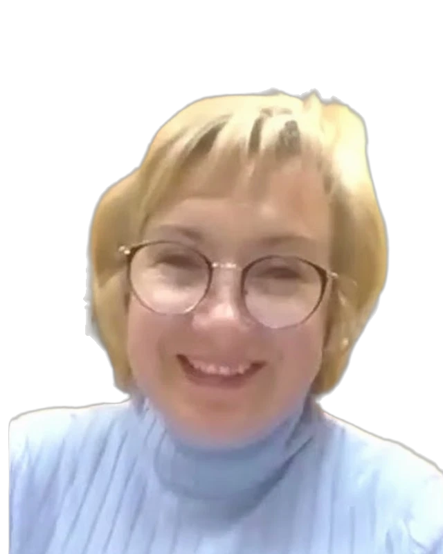

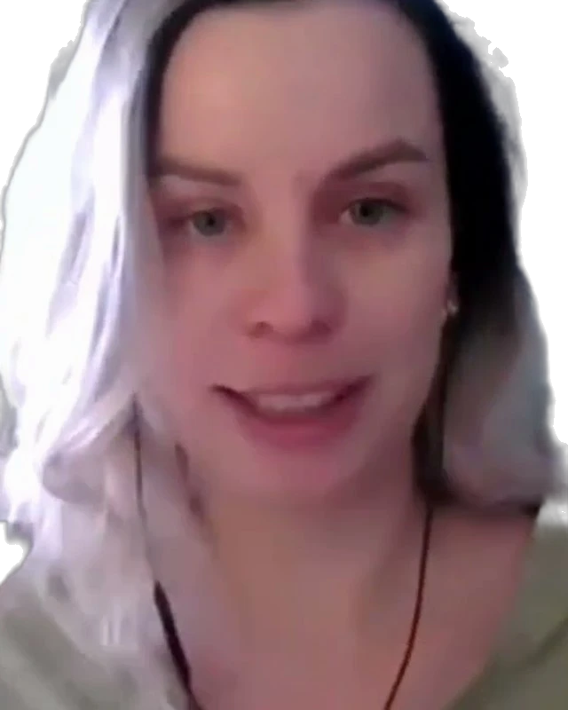
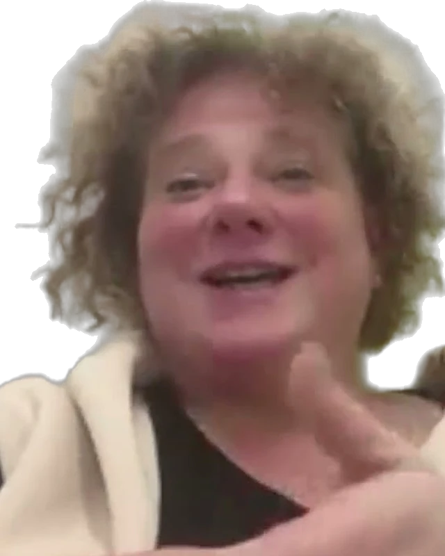
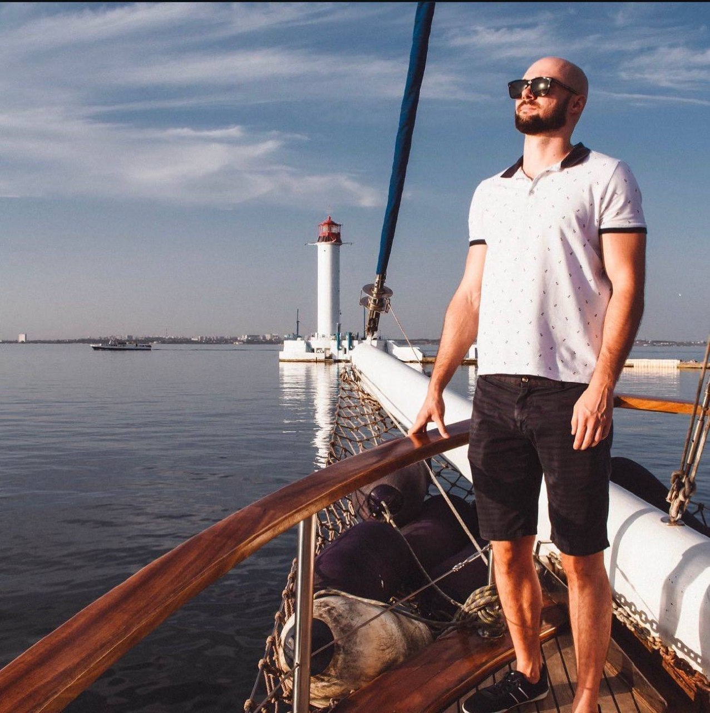
Смотреть интервьюСергей Сорока: от управленческого тупика к поэтапному развитию компании
Своими словами, на камеру
«Не искать, почему не получится, а смотреть, как можно сделать»
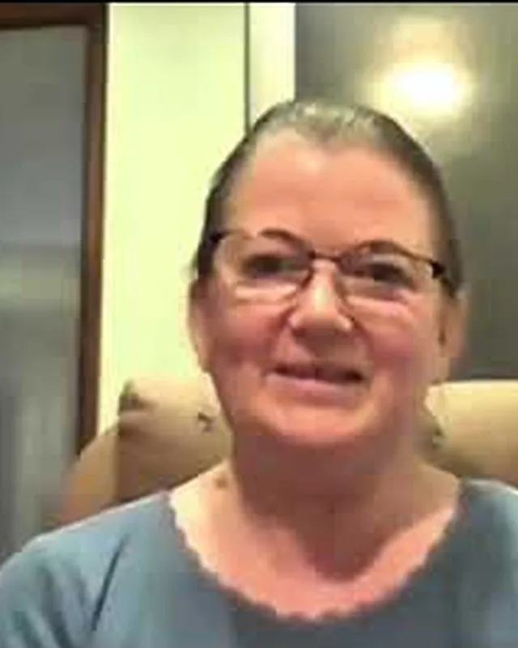
«Теперь я точно понимаю свою ценность и вижу, как устроена воронка продаж»
«Самое сильное — это прорыв в голове. Я увидела паттерны, которые годами меня тормозили»
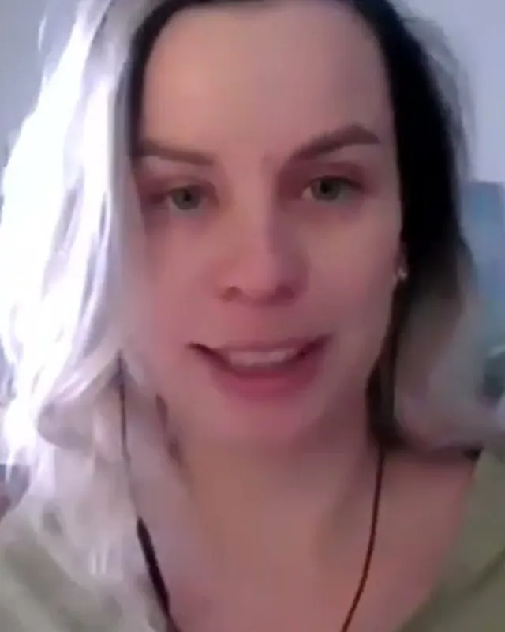
«Без вас я бы не поняла, что у меня есть опыт и я действительно эксперт»
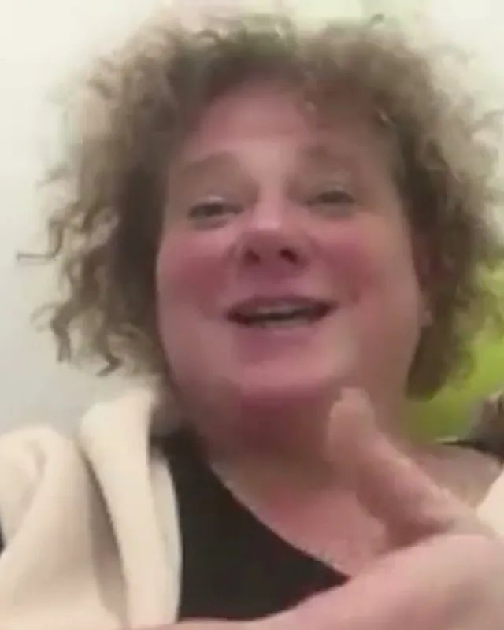
У каждого своя точка роста
за столько окупился тренинг: первый предоплатный заказ на 100 пар серёжек
«Кто бы мог подумать, что за пару дней можно запустить колесо сувенирки? Просто взять и запустить.»
«Я тут перешагнула через огромное количество барьеров, своих страхов и самозванцев»
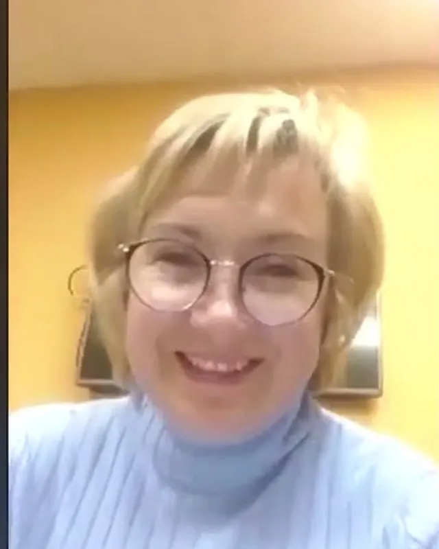
Я работал официантом на очередном банкете. Люди делились тем, что у них произошло за год, я видел их восторженные лица и загорелся сам. В этот вечер я купил билет на будущее обучение.
Читать историю целиком ↗«Предупреждали не писать „спасибо, вау“, но всё же именно так.»
По организации: долго ждали начала, расхолаживает; тянучка при регистрации. Говоришь уверенно и от души. После мероприятия ощущение, что с пользой провёл время.
Читать отзыв ↗Твои страхи определяют, куда двигаться. Ставь цели не ради плюшек, а ради того, кем ты станешь, проходя этот путь.
Читать отзыв ↗Тренінг, який вчить думати інакше, вчить концентруватись на справі і дисциплінувати, в першу чергу, себе.
Как человек с двумя высшими образованиями и дипломами, успешно пылящимися в серванте, я точно знаю, что вернусь к вам в будущем, так как у меня ниша — наши детки.
Читать отзыв ↗«Я очень много курсов проходила — такого не было нигде»
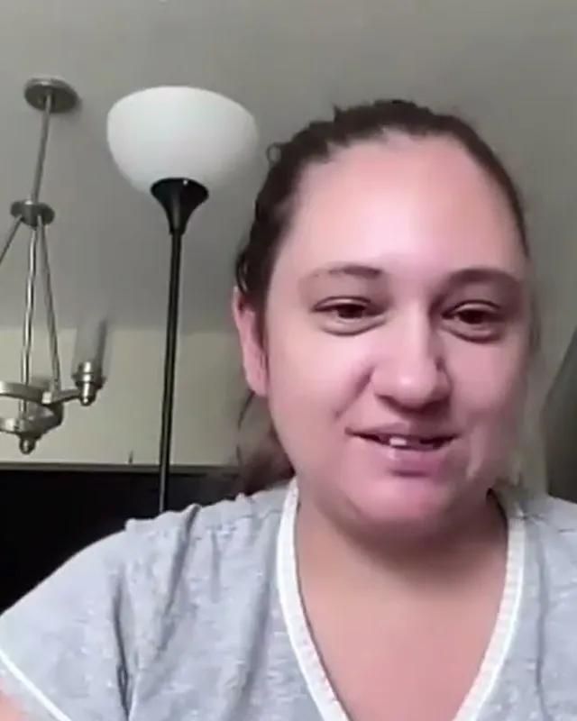
Ваша история может стать следующей
- Отзыв или кейсОтзыв за пару минут своими словами, кейс подробнее. Можно наговорить голосом
- Проверим и оформимПоправим текст, подберём заголовок и сделаем карточку
- ОпубликуемСообщим письмом, когда история выйдет